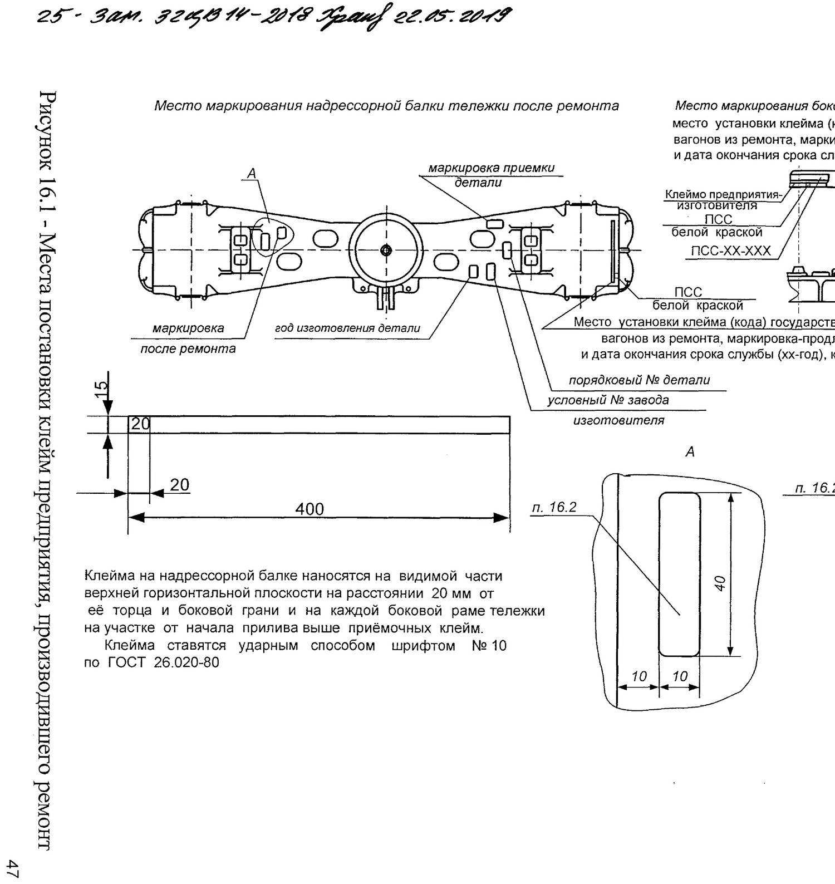
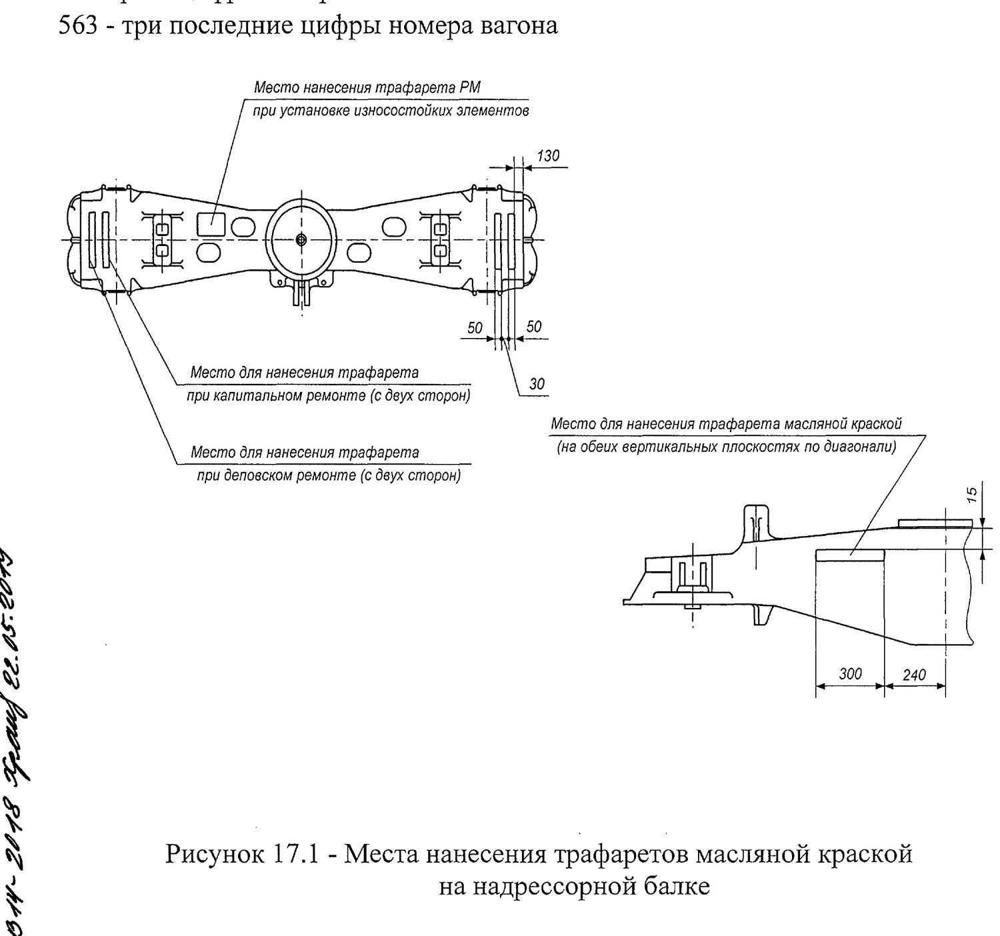
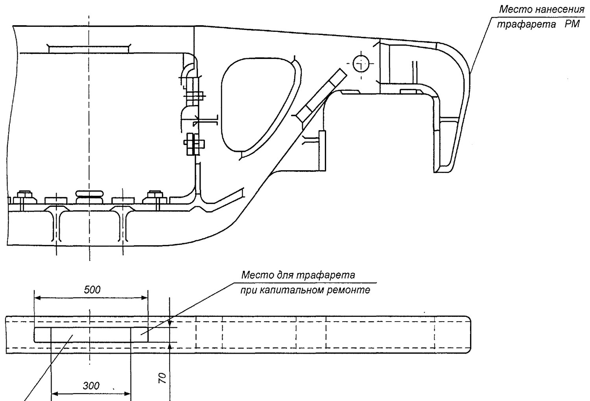

Tormoz uskunasi, sifat nazorati, klеymo va bo'yash
12, 15, 16, 17 va 19-bo'limlar: tormoz detallarini ta'mirlash, sifat tekshiruvi, klеymo va trafaretlarni qo'yish, bo'yash hamda quyma detallarni hisobdan chiqarish.
12-bo'lim. Tormoz uskunasi detallari va uzellarini ta'mirlash
Aravacha ta'mir uchastkasida to'rtta ish bajariladi (12.1-band):
- aravachadan tormoz uskunasining detallari va uzellarini yechish;
- tormoz uskunasi detallari va uzellarini ta'mirlash hajmini aniqlash;
- ularni ta'mir uchun tegishli pozitsiyalarga uzatish;
- soz detallar va uzellarni ta'mirlangan aravacha ramasiga yig'ish.
| Nima | Qaysi hujjat bo'yicha | Band |
|---|---|---|
| Tormoz uskunasi detallari va uzellari umuman | «Vagonlar tormoz uskunasini ta'mirlash bo'yicha umumiy rahbariyat» 732-ЦВ-ЦЛ | 12.2 |
| Triangel | «Yuk vagonlari aravachalari richag uzatmasining triangeli. Ta'mir bo'yicha rahbariyat» Р 001 ПКБ ЦВ-2009 РК | 12.3 |
| Sharnirli birikmalar | 732-ЦВ-ЦЛ | 6.8 |
Boshqa talablar (6.7–6.8-bandlar):
- Tormoz kolodkalarini biriktirishning notipik chekalari va richag uzatmasini biriktirish shaybalari tipik detallarga almashtiriladi, shplintlar esa — yangisiga;
- Yon ramaning tormoz bashmagi osmasi valigi kronshteyniga va bashmak osmasiga polimer vtulkalar o'rnatiladi (chert. 194.00.054-0, УРЛТ.667155.007 yoki ПНБА.667155.007-01; osmaga — Т 258.00.02, 194.40.035-0 yoki УРЛТ.667752.001);
- Richaglarning triangellar, tortqilar va «o'lik nuqta» derjavkasi bilan sharnirli birikmalariga КПМ kompozitsion pressovka materialidan vtulkalar o'rnatiladi (ТУ 2292-011-56867231-2007). КПМ ПЦ-10 yoki УГПТ materiallarini qo'llashga ham ruxsat beriladi;
- Avtorejim uchun tayanch balka yon ramalarning maxsus javonlariga 732-ЦВ-ЦЛ talablariga muvofiq o'rnatiladi (6.12-band).
15-bo'lim. Ta'mir sifatini tekshirish
Oraliq sifat tekshiruvidan quyidagilar o'tkaziladi (15.1-band):
- aravacha ostiga podkatka qilinadigan g'ildirak juftlari;
- o'sha g'ildirak juftlarining buksa uzellari;
- to'rt o'qli aravachalarning biriktiruvchi balkalari;
- nadressor balkalari;
- friksion plankali yon ramalar va friksion ponalar;
- prujinalar va ularning komplektlanishi;
- tormoz richag uzatmasining tarkibiy qismlari.
Ya'ni saytdagi «Shablonlar» bo'limidagi 36 ta shablon — aynan shu albomdan. Sifat tekshiruvi ular bilan bajariladi.
16-bo'lim. Klеymo va markirovka belgilarini qo'yish
Klеymo va markirovka belgilari aravacha tarkibiy qismlariga ta'mir ishlari tugagandan, uchastka rahbarlari va depodagi vagon qabul qiluvchisi tomonidan qabul qilingandan keyin qo'yiladi. Zavodda — ОТК xodimlari va inspektor-qabul qiluvchi tomonidan (16.1-band).

| Parametr | Talab |
|---|---|
| Klеymo qo'yish usuli | Zarba usuli, № 10 shrift ГОСТ 26.020-80 |
| Nadressor balkasida joyi | Yuqori gorizontal tekislikning ko'rinadigan qismi, torets va yon qirradan 20 mm |
| Yon ramada joyi | Priliv boshlanishidan qabul klеymolaridan yuqorida |
| Davlat mansubligi klеymosi (kodi) | «Vagon tarkibiy qismlariga davlatga mansublik klеymolarini qo'yish metodikasi» bo'yicha |
Xizmat muddatini uzaytirish belgisi — «ПСС»
Aravacha tarkibiy qismining xizmat muddati uzaytirilganda — ya'ni u ikkita usul bilan buzmasdan nazoratdan «yaroqli» chiqsa (birinchisi shtat usul, ikkinchisi akustiko-emissiya usuli) — yuzaga zarba usulida klеymo qo'yiladi (16.4-band).
| Parametr | Qiymat |
|---|---|
| Klеymo aniq va ravshan bo'lishi | Shart |
| Raqam va harflar balandligi | 6 dan 10 mm gacha |
| Klеymo chuqurligi | 0,25 mm dan kam emas |
| Markirovka shakli | ПСС-ХХ-ХХХ — xizmat muddatini uzaytirish, tugash yili, uzaytirgan tashkilot klеymosi |
| Dublikat | Zarba usulidagi markirovka ostiga oq bo'yoq bilan «ПСС» trafareti |
| «ПСС» trafareti harflarining balandligi | 30 mm dan kam emas |
17-bo'lim. Aravachalarni bo'yash
| Ta'mir turi | Qanday bo'yaladi |
|---|---|
| Kapital ta'mir | Aravacha TO'LIQ bo'yaladi |
| Depo ta'miri | Faqat bo'yog'i shikastlangan joylar |
- Bo'yash ko'chgan zang, buzilgan eski bo'yoq, shlak, okalina, yog' va boshqa ifloslikdan tozalangan yuzalar bo'yicha bajariladi (17.1-band).
- Bo'yashga tayyorlangan yuzalar quruq bo'lishi kerak (17.3-band).
- Grunt sifatida ПФ-115, ПФ-133 emallari yoki ГС-1, ГС-2 moyli bo'yoqlari (ГОСТ 6586) ishlatiladi. Shu materiallar va ularning o'rnini bosuvchilar bo'yash uchun ham qo'llaniladi (17.5-band).
- G'ildirak juftlari РД ВНИИЖТ 27.05.01-2017 talablariga muvofiq bo'yaladi. G'ildirak obodlarida bo'yoq bo'lishi ruxsat etilmaydi (17.6-band).
Trafaretlar — vagon raqami va ta'mir yili
Aravachadagi yozuvlar moyli bo'yoq bilan faqat trafaret yordamida, harf va raqamlar uzilgan joylarini bo'yab chiqib qo'yiladi. Barcha yozuvlar oq rangda — yon ramalarning yuqori yuzalariga markazdan va nadressor balkasining ikkala uchidagi yuqori yuzaga (17.7-band).
| Ta'mir turi | Trafaretda nima yoziladi | Namuna |
|---|---|---|
| Kapital ta'mir va qurilish | Yil · korxona raqami · vagon raqamining birinchi va oxirgi uch raqami | 93-12-6-546 |
| Depo ta'miri | Vagon raqamining birinchi va oxirgi uch raqami | 4-563 |
Namunadagi «93-12-6-546» quyidagini anglatadi: 93 — kapital ta'mir yili yoki vagon qurilgan yil; 12 — vagon ta'mirlash korxonasi yoki vagon ishlab chiqargan zavod raqami; 6 — vagon raqamining birinchi raqami; 546 — vagon raqamining oxirgi uch raqami.


19-bo'lim. Quyma tarkibiy qismlarni hisobdan chiqarish
Buzmasdan nazorat yoki dеfektatsiya natijasida brak qilingan quyma tarkibiy qismlar (yon rama, nadressor balkasi, 18-101 modeli aravachalarining biriktiruvchi balkasi) hisobdan chiqariladi va metallolomga jo'natiladi.
| Bosqich | Nima qilinadi |
|---|---|
| 1 | Б ilovasidagi shakl bo'yicha AKT tuziladi |
| 2 | Aktda ko'rsatiladi: tayyorlangan vaqti va joyi (oy, yil, zavod klеymosi), ЖА 1004 09 bo'yicha vagon egasining kodi, oxirgi rejali ta'mir sanasi va joyi, nosozliklar |
| 3 | Quyma tarkibiy qismga (nadressor balkasi, yon rama) РД 32 ЦВ 052-2009 ga muvofiq BARTARAF ETIB BO'LMAYDIGAN NUQSON qo'yiladi |
| 4 | Detal metallolomga jo'natiladi |
20-bo'lim. Ta'mir sifati uchun javobgarlik
Ta'mir sifati uchun javobgarlik ta'mirni bajargan korxona zimmasiga yuklanadi. Nosozlik aniqlanganda ВУ-41М shaklidagi akt-reklamatsiya tuziladi (И ilovasi).
Nazorat savollari
Avval o'zingiz javob bering, so'ngra tekshiring.
1. Aravacha ta'mir uchastkasida tormoz uskunasi bilan qanday ishlar bajariladi?
2. Triangel qaysi hujjat bo'yicha ta'mirlanadi?
3. Ta'mir sifati qanday aniqlanadi?
4. Klеymo qanday usulda va qaysi shrift bilan qo'yiladi?
5. «ПСС» markirovkasining raqam va harflari qanday o'lchamda bo'lishi kerak?
6. Depo ta'mirida aravacha qanday bo'yaladi?
7. «РМ» klеymosi nimani anglatadi va qanday o'lchamda qo'yiladi?
8. Brak qilingan quyma detal bilan nima qilinadi?
Manba: РД 32 ЦВ 052-2009 — ГОСТ 9246-2013 bo'yicha zazorli yon skolzunli tip 2 yuk vagon aravachalarini ta'mirlash. Umumiy ta'mir rahbariyati (2026-yil 1-iyuldan amaldagi tahrir).
Andijon vagon deposi · telejka ta'mirlash sexi.